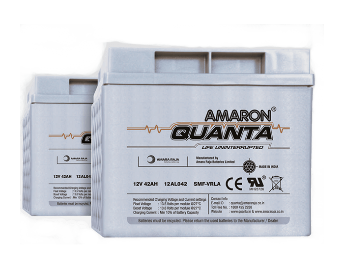
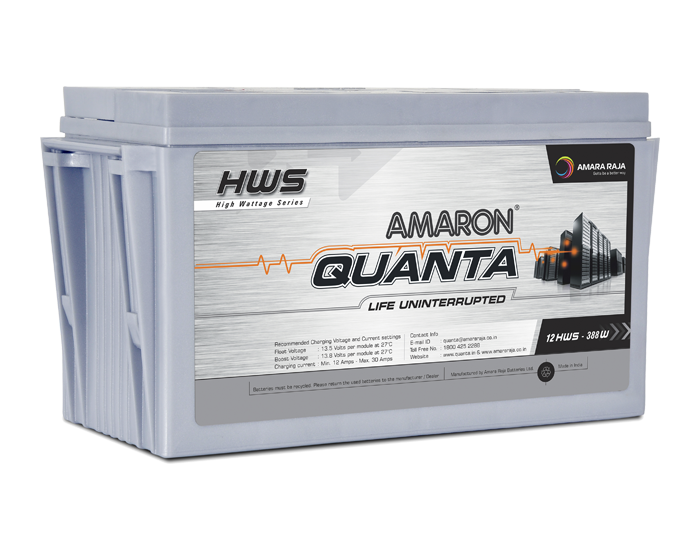
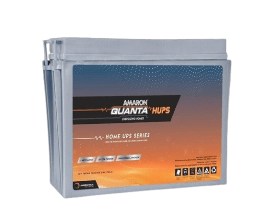
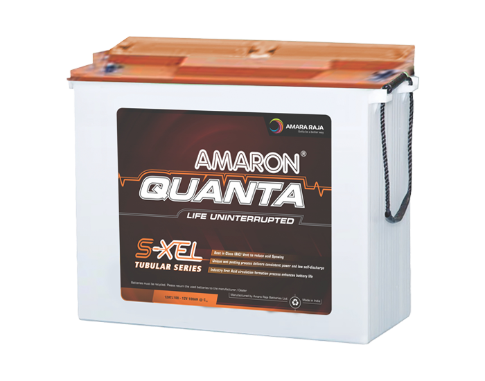
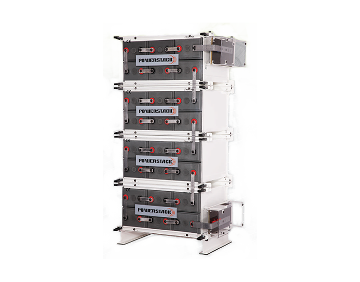

Offices and counters
Single-phase UPS for desks, billing counters, CCTV and network racks.
Amaron Quanta 12V, 7 to 42 Ah
The batteries behind our UPS installations. We supply, install, test and replace Amara Raja's Amaron Quanta and PowerStack ranges, from a single 7 Ah battery to large 2V cell banks.
Batteries for UPS systems
Amara Raja Energy & Mobility is India's pioneer and largest manufacturer of SMF VRLA batteries. Its batteries are designed for tropical conditions, which is why we fit them in UPS systems across Andhra Pradesh and Telangana.





We confirm the exact model and number of batteries after checking your UPS and the backup time you need.
Single-phase UPS for desks, billing counters, CCTV and network racks.
Amaron Quanta 12V, 7 to 42 Ah
Three-phase UPS that needs a large battery bank to bridge the changeover to the generator.
Amaron Quanta 65 to 200 Ah, or Quanta HWS
Sites with frequent or long outages that discharge the batteries deeply and often.
Amaron Quanta S-XEL tubular
Large UPS systems where battery banks need high capacity and long life.
PowerStack 2V cells
A battery is only as good as how it is sized, installed and looked after.
Health checks, replacement and responsible disposal of old batteries.
Scheduled visits that catch weak batteries before they fail.
The UPS range we pair with Amara Raja batteries.
Product photos, ratings and figures are from Amara Raja's published product information and can change as Amara Raja updates its range. We confirm the exact model and current datasheet in your quote.
Tell us your UPS model, how many batteries it takes and how long you need to run on battery. We'll recommend the right Amara Raja battery and price it with installation.
Get a quote